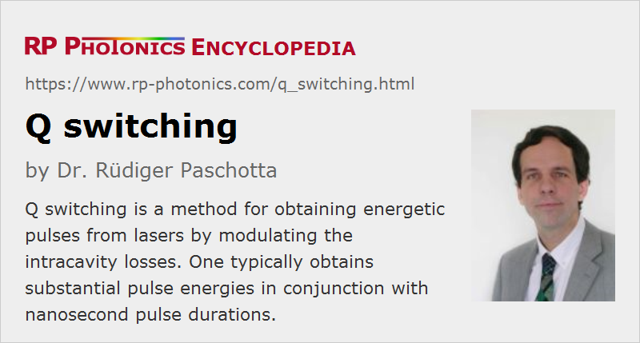

Q Switching
Definition: a method for obtaining energetic pulses from lasers by modulating the intracavity losses
More general term: pulse generation
More specific terms: active Q switching, passive Q switching
German: Güteschalten
Categories: light pulses, methods
How to cite the article; suggest additional literature
Author: Dr. Rüdiger Paschotta
Q switching is a technique for obtaining energetic short (but not ultrashort) pulses from a laser by modulating the intracavity losses and thus the Q factor of the laser resonator. The technique is mainly applied for the generation of nanosecond pulses of high energy and peak power with solid-state bulk lasers.
The generation of a Q-switched pulse (sometimes called a giant pulse) can be described as follows:
- Initially, the resonator losses are kept at a high level. As lasing cannot occur at that time, the energy fed into the gain medium by the pumping mechanism accumulates there. The amount of stored energy is often limited only by spontaneous emission (particularly for continuous pumping), in other cases (with strong enough gain) by the onset of lasing or strong ASE, if not simply by the pump energy available. The stored energy can be a multiple of the saturation energy.
- Then, the losses are suddenly (with active or passive means, see below) reduced to a small value, so that the power of the laser radiation builds up very quickly in the laser resonator. This process typically starts with noise from spontaneous emission, which is amplified to macroscopic power levels within hundreds or thousands of resonator round trips.
- Once the temporally integrated intracavity power has reached the order of the saturation energy of the gain medium, the gain starts to be saturated. The peak of the pulse is reached when the gain equals the remaining (low) resonator losses. The large intracavity power present at that time leads to further depletion of the stored energy during the time where the power decays. In many cases, the energy extracted after the pulse maximum is similar to that before the pulse maximum.
This video, developed in a cooperation between RP Photonics and Cutting Edge Optronics, explains the principle of Q switching.
The pulse duration achieved with Q switching is typically in the nanosecond range (corresponding to several resonator round trips), and usually well above the resonator round-trip time. The energy of the generated pulse is typically higher than the saturation energy of the gain medium and can be in the millijoule range even for small lasers. The peak power can be orders of magnitude higher than the power which is achievable in continuous-wave operation. Even for lasers with moderate size and with moderate focusing of the beam, the peak intensity can be sufficient for optical breakdown in air.
In most cases, Q-switched lasers generate regular pulse trains via repetitive Q switching. The pulse repetition rate is typically in the range from 1–100 kHz, sometimes higher. Passively Q-switched microchip lasers have reached pulse durations far below 1 ns and repetition rates up to several megahertz, whereas large (typically amplified) laser systems can deliver pulses with many kilojoules of energy and durations in the nanosecond range.
Lasers to which the Q-switching technique is applied are called Q-switched lasers. The first experimental demonstrations were performed in 1961 at Hughes Aircraft Company [2], shortly after the demonstration of the first laser in the same laboratory.
The resonator losses can basically be switched in different ways:
Active Q Switching
For active Q switching (Figure 1), the losses are modulated with an active control element (active Q switch), typically either an acousto-optic or electro-optic modulator. Here, the pulse is formed shortly after an electrical trigger signal arrives. There are also mechanical Q switches such as spinning mirrors, used as end mirrors of laser resonators. In any case, the achieved pulse energy and pulse duration depends on the energy stored in the gain medium, i.e. on the pump power and the pulse repetition rate.
Interestingly, the switching time of the modulator does not need to be comparable to the pulse duration – it can be much longer than that, since it takes many resonator round trips for an intense pulse to be formed. If it is too long, however, this may lead to double pulses or to certain instabilities.
The beam deflection angle of the Q-switch must be large enough such that the diffracted beam really leaves the resonator. In some cases, this leads to the demand of a high drive frequency of the Q-switch – e.g. 80 MHz, while 40 MHz is sufficient for other lasers. Critical cases are those with large beam divergence within the Q-switch.
For many applications, Q-switched pulses are generated in a periodic fashion, i.e., with a given pulse repetition rate. A Q-switch driver may contain an oscillator (or a digital device) for periodically triggering the pulse generation, or receive a periodic trigger signal (often with TTL format) from an external device. In some cases, a TTL input only indicates to the driver whether or not the periodic pulse train should be generated (with the timing determined by the driver itself). Some drivers have an analog input, allowing for the continuous control of Q-switch transmission.
In some laser applications, such as laser marking, the Q-switched pulse train must be switched off for certain time intervals, while the pumping of the laser gain medium continues. This leads to a stronger accumulation of stored energy in the gain medium (compared with the situation of periodic pulse generation). Therefore, if one enables the pulse generation again, particularly the first pulse may require a substantially higher energy than in steady-state pulsing. Because the pulse duration is also decreased, the peak power rises even more. Those factors may lead to laser-induced damage either of laser components or any external objects, and they may disturb the process for which the pulses are used. To avoid such problems, one can either reduce the pump power during the times without pulse generation or take measures to introduce additional losses for the first few pulses. A common technique is to use the active Q-switch for that: instead of being fully switched off for pulse generation, it is only reduced in power, such that some substantial transmission losses remain, which correspondingly reduce the pulse energy. (Some Q-switch drivers offer such functionality.) The excess energy then goes into the diffracted beam, which may be safely disposed with a beam dump. An alternative unique is to pull down the stored energy by low-power lasing before the next pulse train begins; that can be achieved by slowly increasing the Q-switch transmission.
The pulse repetition rate of an actively Q-switched laser can be controlled via the modulator. Higher repetition rates typically lead to lower pulse energies, if the pump power is kept constant. At the same time, the pulses then become longer, as the initial laser gain becomes lower. For very high repetition rates, some pulses may be missing in the pulse train, if the gain cannot recover in time. For very low repetition rates, one may obtain rather short high-energy pulses, but once the pulse period exceeds the upper-state lifetime, increasing losses via spontaneous emission limit the possible pulse energy.
The duration of the generated pulses is at least of the order of the resonator round-trip time, and often substantially longer than that, if the laser gain and/or the resonator losses are low. Particularly for high pulse repetition rates, it can be difficult to obtain very short pulses. This problem can be solved by using the method of cavity dumping. Instead of using an ordinary output coupler mirror, the pulse generation phase is effectively done with a “closed” low-loss resonator. Once most of the stored energy has been transferred into the circulating pulse, the energy is suddenly released with the cavity dumper, which is a fast optical switch. In that way, the optical energy in the resonator can be extracted within one resonator round-trip time, independent of the time required for pulse build-up.
Passive Q Switching
For passive Q switching (sometimes called self Q switching), the losses are automatically modulated with a saturable absorber (Figure 2). Here, the pulse is formed as soon as the energy stored in the gain medium (and thus the gain) has reached a sufficiently high level. In many cases, the pulse energy and duration are then fixed, and changes of the pump power only influence the pulse repetition rate.
A frequently used saturable absorber material for passive Q switching of 1-μm YAG lasers is Cr4+:YAG. For 1.5-μm erbium lasers, there are Co2+:MgAl2O4, Co2+:ZnSe and other cobalt-doped crystals, and glasses which are doped with PbS quantum dots. V3+:YAG crystals are suitable for the 1.3-μm region. Semiconductor saturable absorber mirrors can be applied at various wavelengths.
The recovery time of a saturable absorber is ideally longer than the pulse duration, so that additional unnecessary energy losses by are avoided. However, the absorber should be fast enough to prevent premature lasing when the gain recovers. Typically, a recovery time somewhere between the pulse duration and the upper-state lifetime of the gain medium is ideal.
In principle, a saturable absorber may absorb only a minor fraction of the energy of the generated pulses, i.e., the absorber does not necessarily reduce the power efficiency of the laser. This is at least possible if the saturation energy of the absorber is well below that of the gain medium and the absorber exhibits negligible non-saturable losses. However, significant non-saturable losses are often encountered in real absorbers, and practical limitations such as damage thresholds may make it impossible to strongly reduce the absorber's saturation energy by using strong focusing. Therefore, the power efficiency is in practice often significantly reduced.
Compared with active Q switching, passive Q switching is simple and cost-effective (eliminating the modulator and its electronics), and is suitable for very high pulse repetition rates. However, the pulse energies are typically lower. Also, external triggering of the pulses is not possible (except with an optical pulse from another source), and it may also be a disadvantage that the pulse energy and duration are often more or less independent of the pump power, which only determines the pulse repetition rate.
Various Technical Issues
Doped insulator solid-state lasers are most suitable for Q switching, since their gain media have long upper-state lifetimes and high saturation energies, and hence the capability to store large amounts of energy. Bulk lasers are normally preferable over fiber lasers, since their larger mode areas allow more energy to be stored, and their shorter resonators allow for shorter pulses.
For both active and passive Q switching, higher pulse repetition rates usually imply longer pulses. This is because the reduced pulse energy leads to a weaker modulation of the net gain, and thus to a slower rise and decay of the optical power. When the pulse repetition rate of an actively Q-switched laser falls below the inverse upper-state lifetime, the maximum pulse energy is achieved, but the average power is reduced due to increased losses via fluorescence (spontaneous emission).
Pumping does not have to occur in a continuous-wave fashion; it is also possible to use pulsed pumping with flash lamps or quasi-cw laser diodes, fired shortly before the Q switch is opened. This reduces the energy losses via spontaneous emission and thus allows the use of gain media with shorter upper-state lifetimes.
In most cases, the pulses in a Q-switched laser are generated by amplifying noise from spontaneous emission in many resonator round trips. Therefore, there is usually no phase correlation between subsequent pulses, and the pattern of excited resonator modes can be random. Moreover, excitation of multiple modes results in the generation of beat notes, apparent as fast modulations on the Q-switched pulse envelope. In some cases, however, a Q-switched laser is seeded e.g. with the output of a small single-frequency seed laser in order to obtain a low-noise single-frequency output, avoiding beat notes and reducing the noise overall (→ injection seeding). It is also possible to generate such a seed in the laser itself (self-injection seeding) from prelasing at a low power level.
The nonlinear dynamics of Q switching sometimes lead to unexpected phenomena, such as the generation of double pulses and/or certain instabilities. Numerical simulations of pulse generation can be very helpful in understanding such effects and identifying the right cure.
Note that the high pulse energies and peak powers obtained with Q switching can raise serious laser safety issues even for lasers with fairly small average output power. Also, the optical intensities can become high enough to destroy intracavity optical elements such as laser mirrors. It can therefore be necessary to use a resonator design which avoids any strongly focused beams on optical components – which can be challenging particularly for short laser resonators (as are desirable for short pulses) with large mode areas. Further, a Q-switched laser has to be kept very clean in order to avoid the burning of dust particles.
See the article on Q-switched lasers for more details on the method of Q switching.
Questions and Comments from Users
Here you can submit questions and comments. As far as they get accepted by the author, they will appear above this paragraph together with the author’s answer. The author will decide on acceptance based on certain criteria. Essentially, the issue must be of sufficiently broad interest.
Please do not enter personal data here; we would otherwise delete it soon. (See also our privacy declaration.) If you wish to receive personal feedback or consultancy from the author, please contact him e.g. via e-mail.
By submitting the information, you give your consent to the potential publication of your inputs on our website according to our rules. (If you later retract your consent, we will delete those inputs.) As your inputs are first reviewed by the author, they may be published with some delay.
Bibliography
| [1] | F. J. McClung and R. W. Hellwarth, “Giant optical pulsations from ruby”, J. Appl. Phys. 33 (3), 828 (1962), doi:10.1063/1.1777174 |
| [2] | G. Smith, “The early laser years at Hughes Aircraft Company”, IEEE J. Quantum Electron. 20 (6), 577 (1984), doi:10.1109/JQE.1984.1072445 |
| [3] | J. J. Degnan, “Optimization of passively Q-switched lasers”, IEEE J. Quantum Electron. 31 (11), 1890 (1995), doi:10.1109/3.469267 |
| [4] | C. Bollig et al., “Stable high-repetition-rate single-frequency Q-switched operation by feedback suppression of relaxation oscillation”, Opt. Lett. 20 (12), 1383 (1995), doi:10.1364/OL.20.001383 |
| [5] | G. J. Spühler et al., “Experimentally confirmed design guidelines for passively Q-switched microchip lasers using semiconductor saturable absorbers”, J. Opt. Soc. Am. B 16 (3), 376 (1999), doi:10.1364/JOSAB.16.000376 |
| [6] | F. Pirzio et al., “Assessment of broad usability of a simple analytic model for passively Q-switched lasers with Cr:YAG saturable absorbers”, J. Opt. Soc. Am. B 37 (6), 1659 (2020), doi:10.1364/JOSAB.392097 |
| [7] | R. W. Hellwarth, “Control of fluorescent pulsations”, in Advances in Quantum Electronics (ed. R. Singer), Columbia University Press, New York (1961), p. 334 |
| [8] | R. Paschotta, Field Guide to Laser Pulse Generation, SPIE Press, Bellingham, WA (2007) |
| [9] | R. Paschotta, case study on an actively Q-switched Nd:YAG laser |
See also: pulse generation, modes of laser operation, pulses, cavity dumping, double pulses, Q-switched lasers, Q switches, acousto-optic Q switches, Q factor, injection seeding, gain switching, acousto-optic modulators, electro-optic modulators, Q-switching instabilities, Q-switched mode locking, mode locking, laser safety
and other articles in the categories light pulses, methods
|  |
If you like this page, please share the link with your friends and colleagues, e.g. via social media:
These sharing buttons are implemented in a privacy-friendly way!